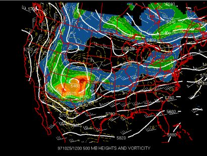

Positive Vorticity Advection Help Page
Positive vorticity advection (movement) is another variable important for storm development. Vorticity is the measurement of spin of air parcels. This is crucial for tornado development. The advection of vorticity into an area is called positive vorticity advection. 500 mb is approximately 18,000 feet above sea level. The 500 mb map with vorticity shows positive vorticity advection with different colors.
On the map below, positive vorticity is indicated by the red, orange, green, and blue colors. The red color shows the greatest amount of vorticity.
